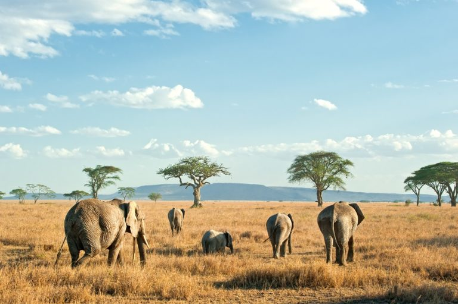

Travel Folder
Next travel destination: South Africa
South Africa is a place I have never been yet have it on the top of my travel priority list. This diverse country has such a unique culture that I have only had the chance to read or hear about. With such unique cuisine, history, wildlife, architecture and hiking trails, I am eager to go experience their culture for myself. South Africa is known as “Sunny South Africa” due to its temperate climate. This makes it an ideal home for exotic tundra animals and perfect conditions to go hiking or scuba diving. In my blog I am going to my list of 5 the top sightseeing areas in South Africa.
South Africa Tourism

Safari